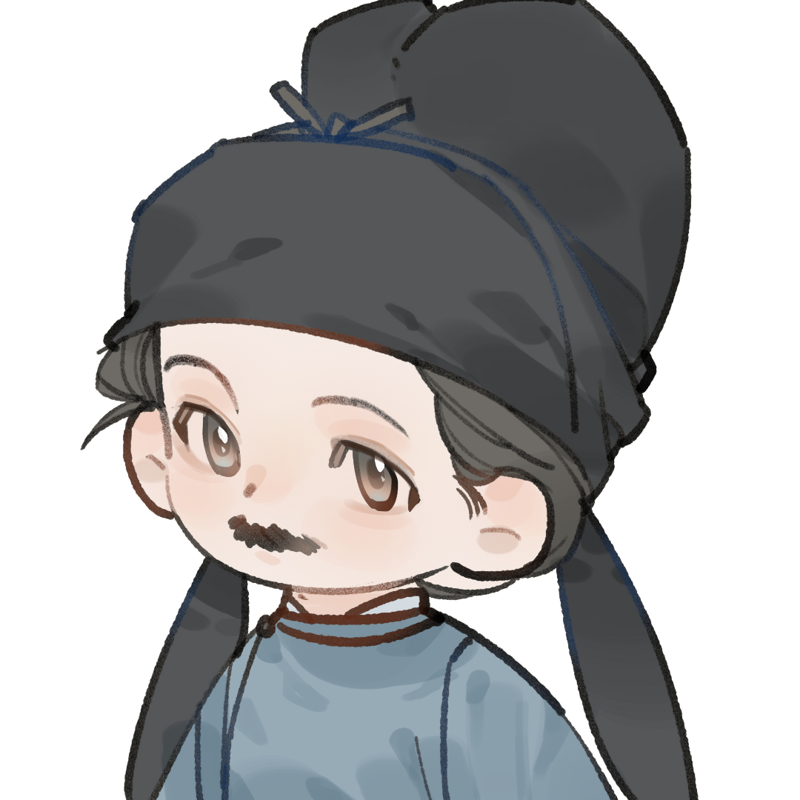

你的名字
上海交通大学本科在读。编程始于 Java，从类和对象理解程序如何组织，也第一次体会到类型与接口的价值。
之后两年几乎每天写 Python，做数据处理和自动化，习惯先把想法跑起来，再谈优雅。
现在专注 C：手动管理内存、直面指针、读编译链接的报错。慢一些，但能把程序到底发生了什么看清楚。
开发都在 Neovim 里完成，配置开源；大学笔记全部公开，高中数学笔记另有一份 Typst 版本。
上海交通大学 · 本科在读
从 Java 起步，写了两年 Python，现在专注 C。 喜欢把问题拆到底层，也喜欢干净顺畅的代码。

← 鼠标移过来看看
上海交通大学本科在读。编程始于 Java，从类和对象理解程序如何组织，也第一次体会到类型与接口的价值。
之后两年几乎每天写 Python，做数据处理和自动化，习惯先把想法跑起来，再谈优雅。
现在专注 C：手动管理内存、直面指针、读编译链接的报错。慢一些，但能把程序到底发生了什么看清楚。
开发都在 Neovim 里完成，配置开源；大学笔记全部公开，高中数学笔记另有一份 Typst 版本。
Java（起点）→ Python（两年）→ C（当前主线）。
2026 年新高考一卷数学 141 分，喜欢推公式和算复杂度。
补 C 与系统基础，读 CPython 源码，准备提第一个 PR。
在一个对底层原理同样好奇的环境里学习。
2026 年高考，长期训练出的推演能力与耐心。
脚本自动化与数据处理，把想法快速变成能跑的程序。
从面向对象启蒙，走向内存与指针。
写代码和笔记都在终端完成，配置开源。
课程笔记持续整理并公开，边学边写。
用 Typst 重排的整套笔记，公式排版干净，源码开源。
从 System.out.println 开始，学类、继承、接口，学会结构化地思考。
写脚本、处理数据。表达力本身就是效率，先跑通，再打磨。
指针、内存布局、编译与链接。每一步都在暴露我以为懂、其实没懂的地方。
希望解释器里也有我写下的几行。
喜欢出门看看不同的城市和风景。
一名花粉，长期使用华为设备。
不只是使用 Python，而是参与塑造它：先打穿 C 与系统基础， 再读懂对象模型与解释器，从一次文档修正或测试补充开始。
把课程笔记和数学笔记长期维护下去，形成自己的知识库。
工作之外学一门乐器，训练另一种耐心。